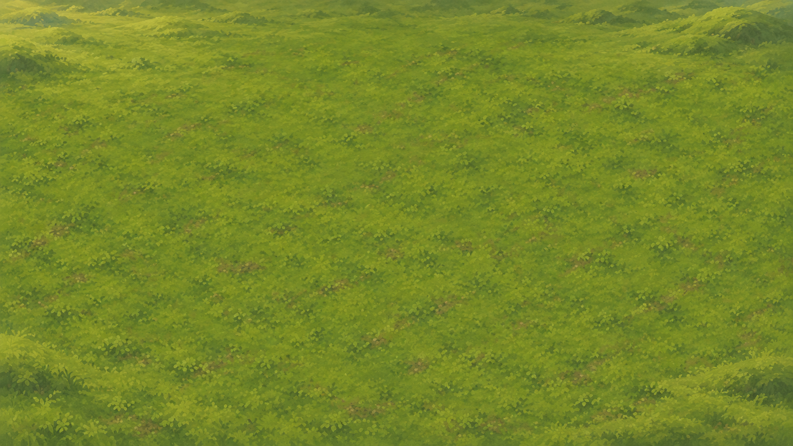

Franjas temáticas · muestra para revisar
Los fondos aprobados rellenan las áreas exteriores al marco lógico y los márgenes internos del mapa. El mapa y el HUD siguen en 1280×720. T478 integra estos siete PNG sin alterar su composición ni sumar casillas jugables.
assets/backgrounds/stripes/; esta lámina queda como referencia de origen y encuadre.Pradera · niveles 1–5 y 15
Fondo de pantalla completo; el rectángulo dorado representa el marco lógico 16:9. La grilla central es esquemática y no representa ningún nivel.
16:9: no recorta la fuente 16:9; no deja franja exterior.

Pradera
Material de referencia activo:
Fuente del PNG: image_gen, muestra conceptual. Ver prompts y límites.
Composición
¿El paisaje se siente como «el más allá del mapa» sin agregar una extensión jugable o un hito?
Legibilidad
¿La textura y el contraste acompañan al HUD, sin competir con el mapa ni las tropas?
Recorte
¿Se conserva lo importante al cambiar entre 16:10, 21:9, 4:3 y 20:9?
Qué recorta cover al llenar la ventana
Cálculo teórico para fuentes 16:9, centradas; no es una captura de Godot. Compará con la imagen elegida arriba.
| Ventana | Franja exterior del marco 16:9 | Recorte de la imagen 16:9 |
|---|---|---|
| 16:9 | ninguna | 0 % |
| 16:10 | 5 % arriba y abajo | 5 % de ancho por lado |
| 21:9 | 12,5 % a cada lado | ≈11,9 % de alto arriba y abajo |
| 4:3 | 12,5 % arriba y abajo | 12,5 % de ancho por lado |
| 20:9 | 10 % a cada lado | 10 % de alto arriba y abajo |
Temas oficiales de campaña según los 15 JSON: pradera (1–5, 15), bosque (6–7), ruinas (8–9, 14), desierto (10–12), nieve (13). Volcán y pantano son temas válidos del editor, pero no aparecen en la campaña vigente. El nivel 15 usa pradera.
T477 no implementa cámara, fondos, UI ni datos. Las capturas reales en ventana y la prueba de nitidez pertenecen a T476/T478.